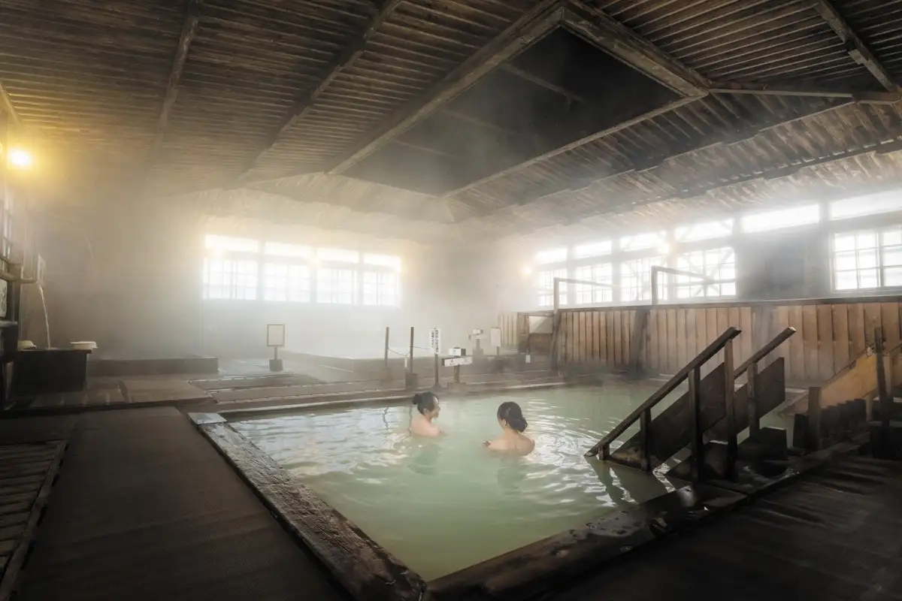
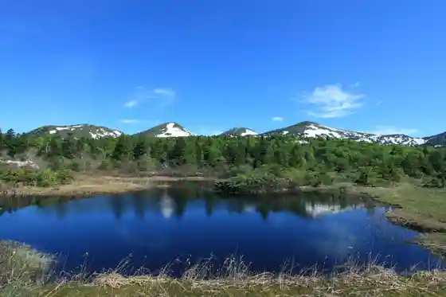
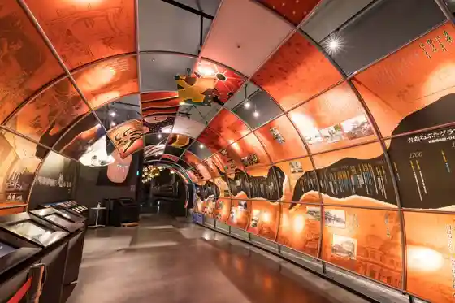
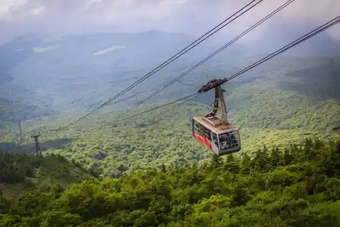

Aomori
Aomori · Aomori
Aomori
Highlighted on the Aomori map.

Sights
Sangayu Onsen
Aomori Nebuta Matsuri
Hakkoda (Hakkoda Renpo)

Nebuta no Ie Wa Rasse

Hakkoda Ropue

Aomori Gyosai Center (Furukawa Market)
Shirogakura Bridge
Efakutorii (A-FACTORY)
Aomori Ken Kanko Bussan Kan Asupamu
Hakkoda no Juhyo
Aomori Prefectural Art Museum
Aomori Ken'ei Asamushi Aquarium
Seikanrenrakusen Memorial Shippu Hakkoda Maru
Jigoku Numa
Asamushi Onsen Matsu Baths
Hakkodasan Setchu Kogun Sonan Museum
Kayano Highlands
Sannai Maruyama Iseki
Roadside Station Asamushi Onsen (Yu Sa Asamushi)
Uto Shrine
Nebuta Rasse Land
Auga Shinsen Market
Asamushi Onsen
Popai Onsen
Hirota Shrine
Hakkoda Godo Line Sansaku Kosu (Yaku 60 Fun)
Tsugarukaikyo Ferii Aomori Feriitaminaru
Showa Great Buddha Seiryu Tera
Hakkoda Kenashi Paradaisu Line
Tennen Onsen Wa no Yu
Gudari Numa
Roadside Station Namioka (Appuruhiru)
Kokusai Geijutsu Center Aomori
Aomori Machinakaonsen
Senju Tsurukame Onsen Kazoku Furo Sanpo
Aoi Umi Park
Asunaro Onsen
Hakkoda Godo Line Sansaku Kosu (Yaku 30 Fun)
Nambuya Umi Ogi Kaku
Chusei no Kan
Hakkoda Otake Tozan Line
Hakkoda Ski Area
Gappo Park
Hakkoda Kokusai Ski Area
Berujaya Hakkoda Sukii Resort
Kanesa
Aomori Kankojoho Center (JR Shin Aomori Eki)
Shin Aomori Ken Sogo Sports Park
Aoi Mori Sentoraru Park
Komaki no Iseki
Yadoya Tsubaki
Aomori Shinrin Museum
Aoi Mori Park
Asamushi Tourist Information
Aomori Supotsu Koen Wakuwaku Plaza
Hakkoda Supotsu Center
Rinkusuteshonhiruzu Unkoku (Moyahiruzu)
Aomori Kanko Koryu Joho Center
Sangayu Su no Shuhaikingu
Nogiwa Park
Namioka Hachiman Shrine
Aomori Prefectural Kyodo Kan
Su no Supotsu Park Aoi Mori
Hakkodasan Gaido Club
Asamushi Onsen Forest Park
Asamushi Onsen SUP Experience Kayakku Experience
Kakuhirogurupusupaariina
Sannai Jomon Berii Land
Oka Den Ariina (Aomori Supotsu Hall)
Naka Village Farm
Aomori Kantorii Kurabu
Heiwa Park
Aomori Prefectural Shizen Fureai Center
Asamushi Koyasan Michinoku Gokokuji
Aomori Namioka Koryu Center (Apinesu)
Taishin Kensetsu Supotsu Plaza (Aomori Supotsu Plaza)
Hakkoda Bakkukantorii Tour
Hakkodasan no Ryosen Ya Shitsugen Wo Meguru no Mbiri Torekkingu
Enerugii Kan Ashitawomo Mori
Jomon no Manabi Sha Komaki no Kan
Shimizu Farm
Aomori Ken Sogo Sports Park
Aomori Tami Shitsunai Puru
Aomori Kita no Mahoroba Rekishikan
Komaki no Forest Donguri no Ie
Daishimbesuborusutajiamu (Aomori Ei Yakyujo)
Seiun Yu Sandomu
Tsutsumigawa Green Park
Shimoyu Damu Koen Campground
Tsukimi no Forest Park
Aomori Eitei Kyujo
Shimoyu Dam
Miyata no Icho
Kajiya Taiken Kyoshitsu